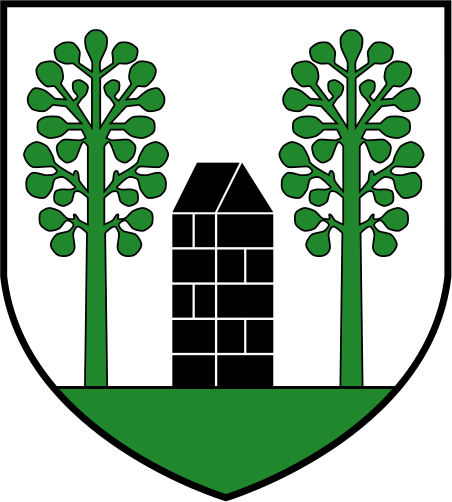

FräschelsDas GemeindegebietOrte
Ebenen
Ansicht
Zum Vergleichen
Über das Modell
Das ganze Gemeindegebiet von Fräschels, rund 311 Hektaren entlang der Gemeindegrenze 2026, aufgebaut aus öffentlichen Geodaten.
Der Download ist eine GLB-Datei für Blender und andere 3D-Programme.
Ziehen verschiebt, rechts ziehen dreht und neigt, das Mausrad zoomt.
Geodaten © swisstopo · Amtliche Vermessung © Kanton Freiburg · Wetter: Open-Meteo · Gestaltung vereinfacht
Fräschels
Das Modell wird geladen …